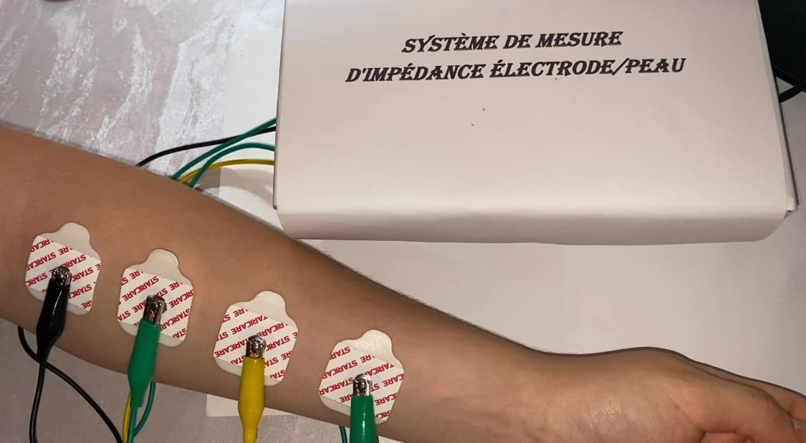
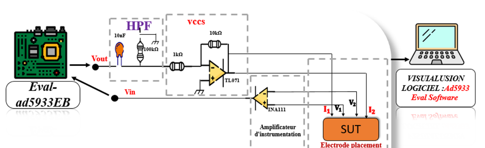
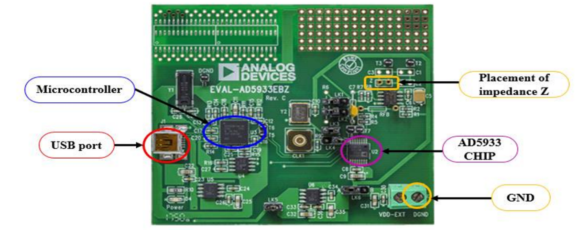
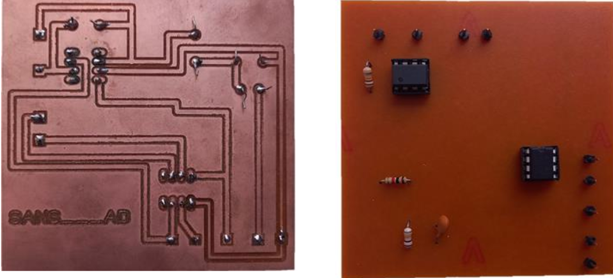
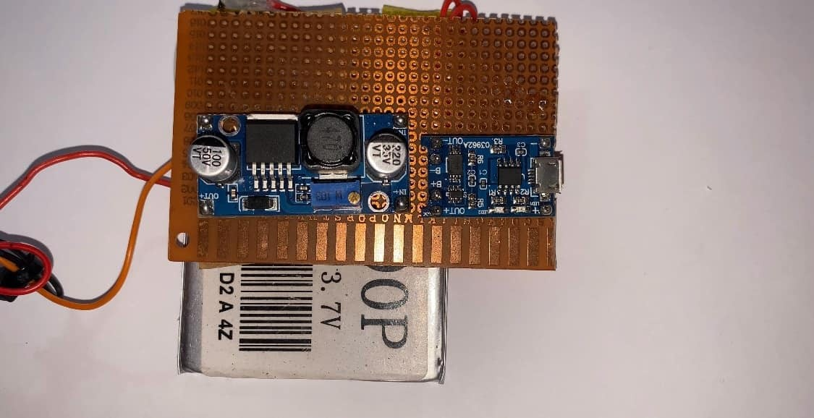
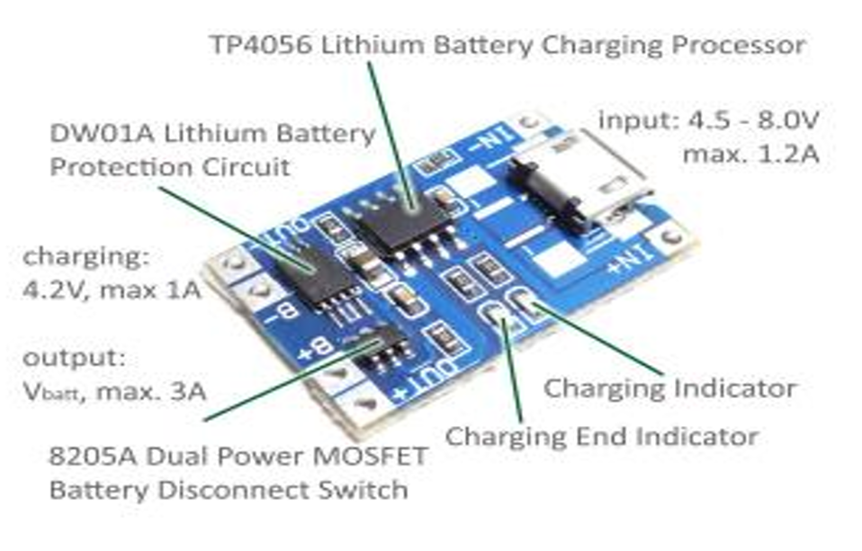
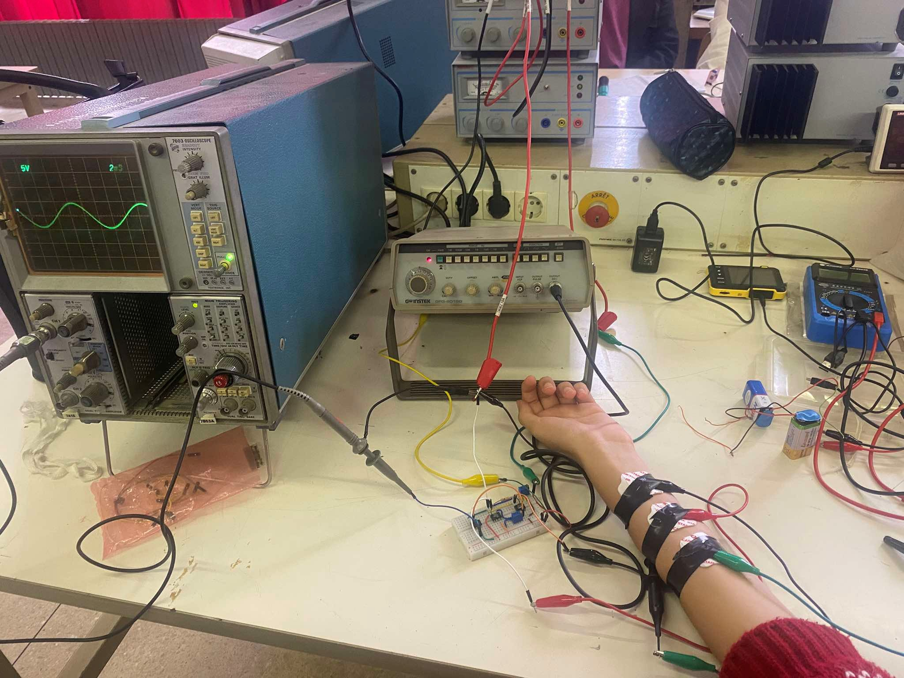
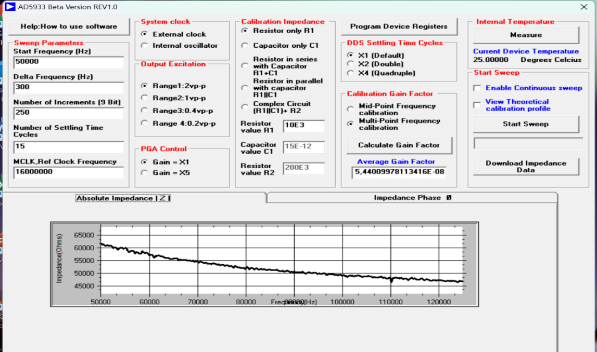
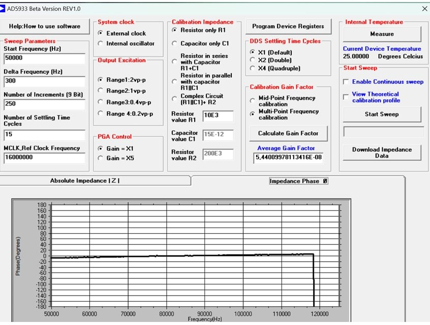
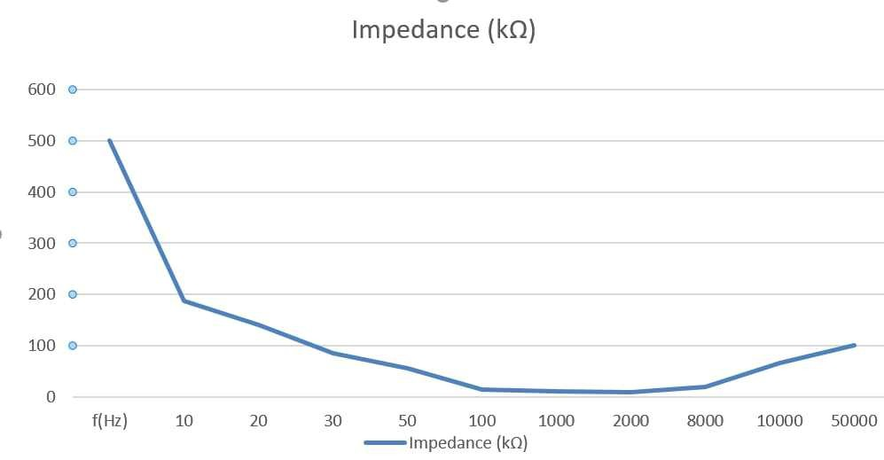

GÉNIE ÉLECTRIQUE · INSTRUMENTATION · USTHB
Bio-impédance
Système portable de mesure tétrapolaire à 4 électrodes
Objectif : mesurer l'impédance électrode/peau de façon non invasive, avec un système portable et peu coûteux. Méthode : balayage en fréquence avec le circuit AD5933 et 4 électrodes, dont 2 injectent le courant et 2 mesurent la tension.
PRINCIPE DE MESURE
Du signal à l'impédance
1. L'AD5933 génère un signal sinusoïdal.
2. Le VCCS le convertit en courant constant (1 mA), injecté par
2 électrodes. Les 2 autres mesurent la tension, amplifiée par l'INA111.
3. L'AD5933 calcule l'impédance par DFT : magnitude et phase.

RÉALISATION
Un premier prototype analogique s'étant montré instable, le système repose sur la carte d'évaluation AD5933EBZ et un circuit analogique (AFE), intégrés dans un boîtier à 3 étages : alimentation, AFE, carte AD5933.




TESTS & RÉSULTATS




- Calibrage : résistance de 10 kΩ (RFB = 200 kΩ), balayage de 5 à 100 kHz.
- Sur le bras : l'impédance d'environ 60 kΩ descend vers 47 kΩ quand la fréquence augmente.
- Caractérisation d'électrode : d'environ 500 kΩ à basse fréquence à environ 9 kΩ vers 2 kHz.
- Perspectives : mesurer à plus basse fréquence, avec des électrodes et un filtrage adaptés.
- Miniaturiser le circuit et le rendre autonome.
- Ajouter une communication sans fil (Bluetooth ou Wi-Fi).
DÉMONSTRATION
Le système en fonctionnement : mesure sur le bras avec 4 électrodes.
- Mise en place : 4 électrodes à gel sur le bras : 2 injectent le courant (1 mA), 2 mesurent la tension.
- Mesure : l'AD5933 balaye les fréquences de 5 à 100 kHz.
- Résultat : le logiciel AD5933 affiche l'impédance et la phase en fonction de la fréquence.
CODE & DOCUMENTATION